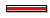

|
 |
Progress Monitors indicate the percentage, in graphic format, of the task that has been completed. When a task has not begun, the progress monitor is blank, or clear. As you work on the process, the bar moves toward the right side of the monitor. When a task is completed, the progress monitor is "full." Progress monitors are either black or red. Black indicates that the task is in process. Red indicates that the progress for the task has gone beyond its normal threshold. The threshold is reached when the On Hand quantity meets or exceeds the Available quantity of SKU. |